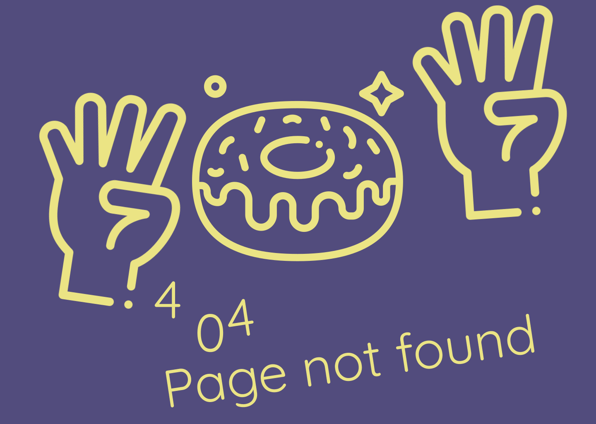
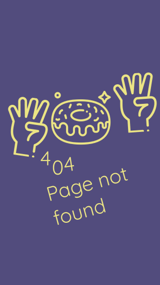

<generic-header [escapeEnabled]="false"></generic-header>
<div class="container">
    
      
    <div class="container-btn">
        <generic-button color="yellow-full" content="Retour à l'accueil" (click)="goToPage('shop')"></generic-button>
        <generic-button color="yellow" content="Retour à la page précédente" (click)="previousPage()"></generic-button>
    </div>
</div>

